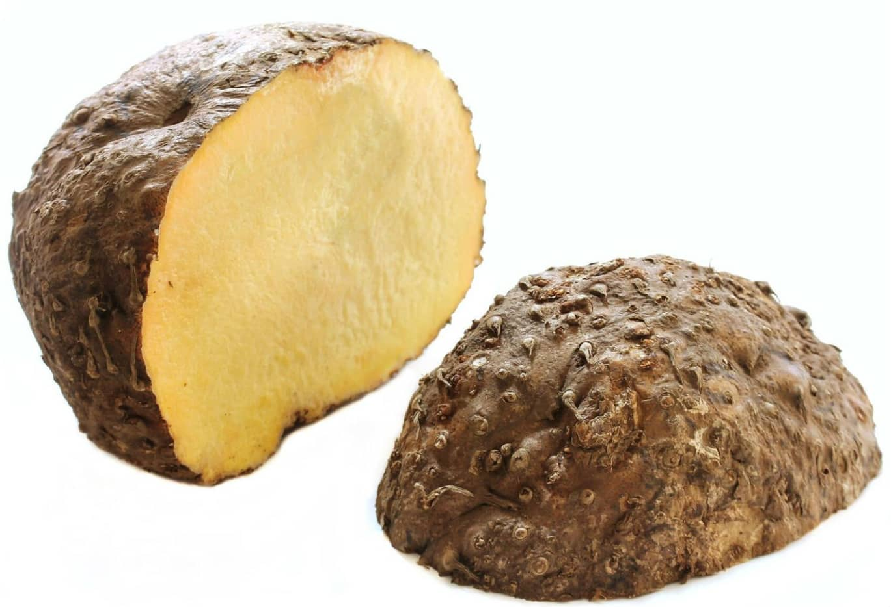

1. Seasons for Growing Elephant Foot Yam

Elephant Foot Yam (Suran) grows best in tropical and subtropical climates. The ideal growing seasons are:
- Monsoon: Plant during the onset of the monsoon season for optimal growth. This usually starts in early to mid-summer.
- Winter: The plant can continue growing through winter if the climate remains warm. Harvest before the onset of frost.